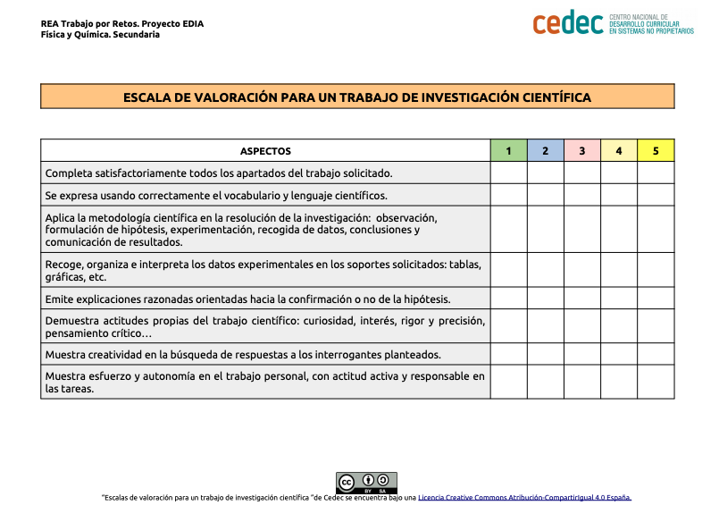

Calor y temperatura
Al poner en contacto dos cuerpos que se encuentran a diferentes temperaturas, el que se encuentre a mayor temperatura cede parte de su energía al de menor temperatura, hasta el punto en el que ambas temperaturas se igualan.
A esta situación se conoce como equilibrio térmico. Sucede que al igualarse las temperaturas, se suspende el flujo de calor, y entonces se llega a la situación de equilibrio.
El equilibrio térmico, lo podemos encontrar en diferentes situaciones cotidianas y procesos naturales, por ejemplo cuando medimos la temperatura corporal a través de un termómetro. El tiempo que tarda el termómetro en alcanzar la temperatura corporal seria el tiempo que se tarda en alcanzar el equilibrio térmico.
Otro ejemplo seria cuándo queremos enfriar una taza de café, agregándole leche fría.

Podemos encontrar muchos más ejemplos sobre equilibrio térmico. Esa va a ser nuestra tarea. Trataremos de investigar, tanto experimentalmente como teóricamente, diferente sistemas cotidianos.
Investigando el equilibrio térmico
- Duración:
- Dos sesiones
- Agrupamiento:
- Pequeño y gran grupo
En esta tarea trabajaremos en grupo, realizaremos diferentes actividades experimentales cuyo objetivo será buscar el equilibrio térmico, y para terminar se investigará una situación cotidiana en la que se analizará una situación real y su relación con el equilibrio térmico.

{kind=link}
Realizaremos diversos experimentos con volúmenes iguales y con volúmenes diversos.
Actividad 1: Experimentamos con volúmenes iguales
En esta actividad vamos a trabajar experimentalmente el equilibrio térmico a partir de la mezcla de volúmenes iguales de agua a diferente temperatura, los resultados los cotejamos en el grupo de aula.
Trabajamos en pequeño y gran grupo durante media sesión.
Materiales y productos
- Tres vaso de precipitados de 100 mL y de 250 mL
- Probeta
- Agua a 20 ºC
- Agua a 70 ºC
- Termómetro
Procedimiento
El profesor o profesora nos entrega a cada grupo agua a 20 ºC y agua a 70 ºC que esta coloreada de rojo.
Realizamos nuestra hipótesis.
¿Qué pasara al mezclar agua a diferentes temperaturas? |
Medimos diferentes cantidades de agua a 20 ºC con la probeta, y medimos las mismas cantidades de agua a 70 ºC.
Mezclar las mismas cantidades de agua a 20ºC y de agua a 70ºC en el vaso de precipitados de 250 mL, y medir la temperatura. Completamos la tabla.
Experimentamos
Realizamos las siguientes mezclas y anotamos las temperaturas:
|
Volumen de agua a 20 ºC |
Volumen de agua a 70 ºC |
Temperatura de mezcla |
|
50 mL |
50 mL |
|
|
75 mL |
75 mL |
|
|
100 mL |
100 mL |
|
Conclusión
Cotejamos los resultados con la hipótesis y realizamos nuestra conclusión:
Actividad 2: Experimentamos con volúmenes diferentes
En esta actividad vamos a mezclar diferentes volúmenes de agua a la temperatura de 20 ºC y de 70 ºC, los resultados los cotejamos en el grupo de aula.
Trabajamos en pequeño y gran grupo durante media sesión.
Materiales y productos
- Tres vaso de precipitados de 100ml y de 250ml
- Probeta
- Agua a 20 ºC
- Agua a 70 ºC
- Termómetro
Procedimiento
Vamos a mezclar diferentes volúmenes de agua a 20 ºC que medimos con la probeta, con diferentes volúmenes de agua a 70 ºC que también medimos con la probeta, las cantidades medidas están en la siguiente tabla. Posteriormente después de mezclar los volúmenes de agua, siguiendo la siguiente tabla, medimos la temperatura de la mezcla y completamos la tabla.
El profesor nos entrega a cada grupo agua a 20 ºC y agua a 70 ºC
Realizamos nuestra hipótesis.
¿Qué pasará al realizar la mezcla? |
Experimentamos
Realizamos las mezclas y anotamos las temperaturas:
|
Volumen de agua a 20 ºC |
Volumen de agua a 70 ºC |
Temperatura de mezcla |
|
100 mL |
50 mL |
|
|
75 mL |
50 mL |
|
|
50 mL |
100 mL |
|
|
50 mL |
75 mL |
|
Conclusión
Cotejamos los resultados con la hipótesis y realizamos nuestra conclusión.
Actividad 3: Equilibrio térmico en una situación cotidiana
Nuestro profesor o profesora nos plantea cuatro situaciones diferentes, que repartirá por sorteo a cada grupo.
Cada grupo hará una presentación de su situación y explicara de forma científica la relación entre la situación y el equilibrio térmico. Trabajaremos utilizando la dinámica cooperativa del “la técnica cooperativa el folio giratorio (descargar en formato editable odt y en pdf), al final cada grupo explicara en el aula la situación que tienen y su conclusión, utilizando la documentación necesaria.

Trabajamos en pequeño y gran grupo durante una sesión.
Situaciones
Realizamos el sorteo de las situaciones.
Se valorará el procedimiento utilizado para llegar a la conclusión, no el resultado en sí.
Recordamos que estamos trabajando en grupo y que utilizamos una dinámica cooperativa "El folio giratorio" para asegurarnos que todos los integrantes del grupo han participado en la actividad.
| SITUACIÓN | |
| 1 |
Un tarro con un kilo de helado se derretirá más lento que otro con un cuarto de kilo del mismo helado. |
| 2 |
Al poner la mano en una barandilla fría, durante un tiempo. |
| 3 |
Cuando una persona sale de bañarse en agua caliente, tiene un relativo frío. |
| 4 |
Cuando se coloca un cubo de hielo en un vaso de agua. |
Exponemos y comparamos los resultados con el resto de los grupos
- ¿Hemos obtenido todos los grupos los mismos resultados en la actividad 1 y 2?
- En caso de no obtener los mismos resultados ¿Por qué crees que ha sido?
- ¿La actividad 1 y 2 te han ayudado a realizar la actividad 3?
- ¿Qué dificultades has tenido al realizar la actividad 3?
- ¿El trabajo en grupo te ayuda en la resolución de las actividades?
Evaluación y reflexión
Una vez que hemos finalizado la tarea, es un buen momento para reflexionar en nuestro diario de aprendizaje. Algunas sugerencias pueden ser:
- ¿Qué he aprendido?
- ¿Qué me ha sorprendido más de todo el proceso? ¿Por qué?
- ¿He cambiado alguna idea previa? ¿Cuál?
- ¿Qué me ha resultado más difícil? ¿Por qué?
Evaluación
En la evaluación utilizaremos las siguientes escalas:
1.-Escala de valoración para un trabajo de investigación científica (descargar en formato editable odt y en pdf)

2.-Escala de valoración para el trabajo en el laboratorio (descargar en formato editable odt y pdf).